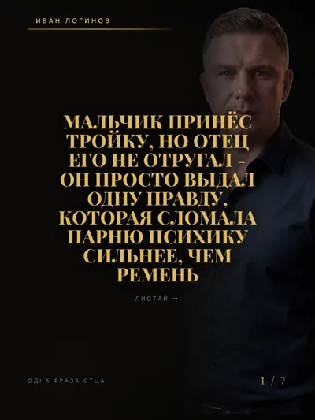
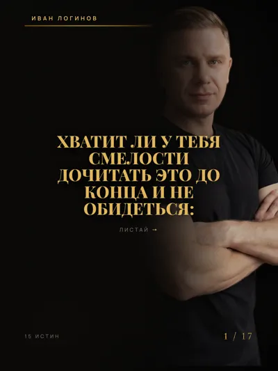
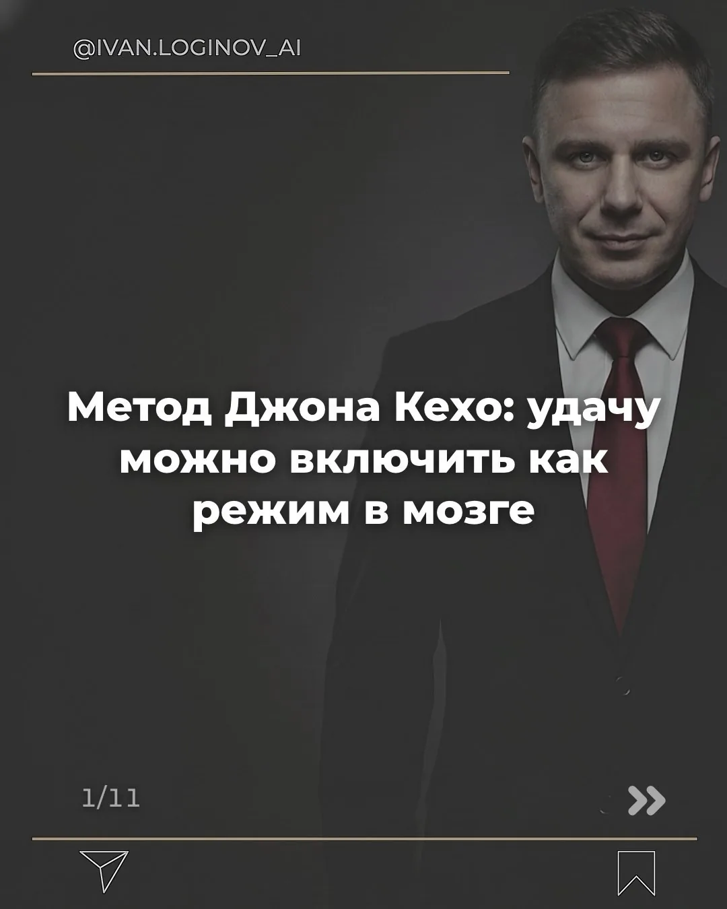
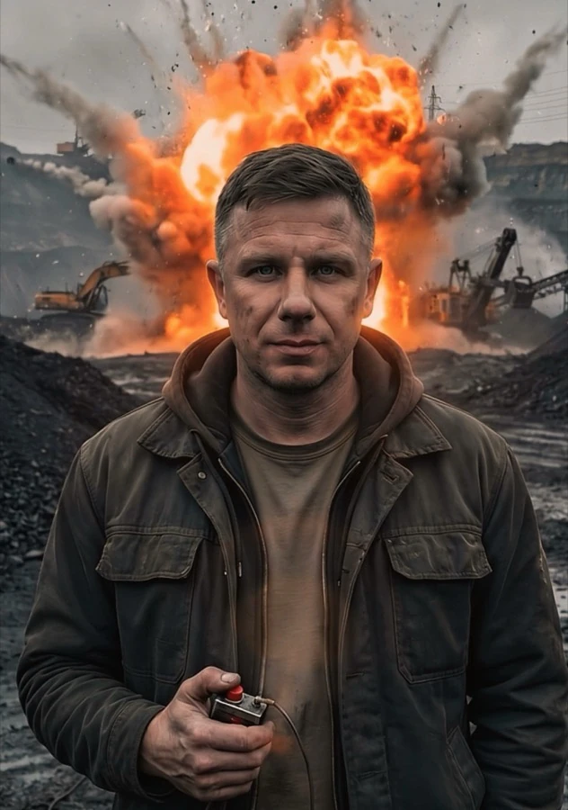
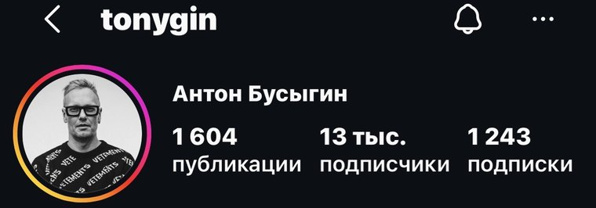
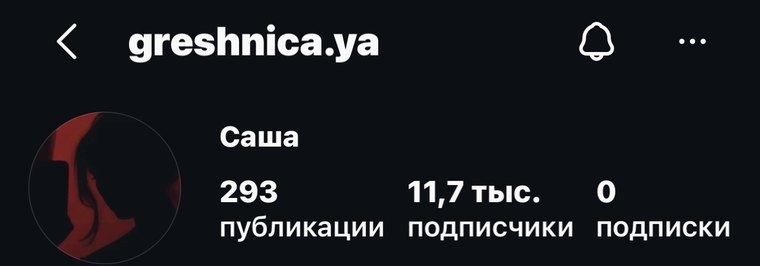
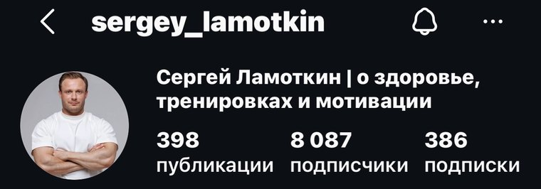
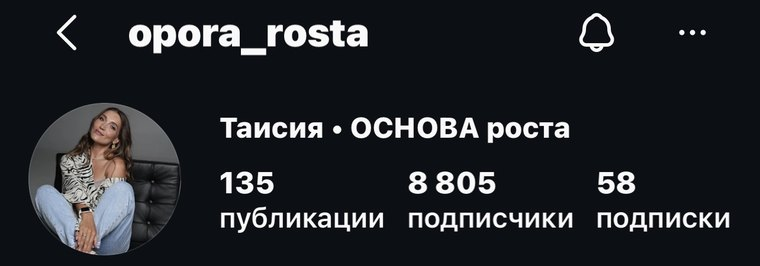
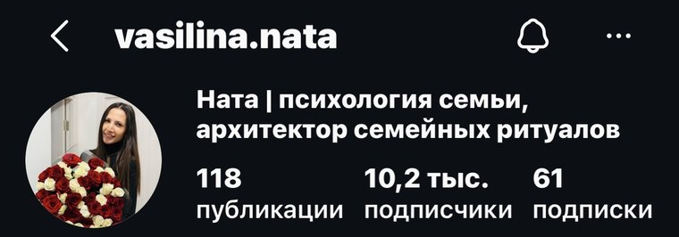

У тебя есть навык, но блог не приносит клиентов
твоя ниша - в стене ниже ↓
ученица: психолог - 0 → 8 805 подписчиков за время обучения с полного нуля · профиль на доске почёта
Нейросети делают контент за тебя: 1 час в день с телефона. Подойдёт и твоему экспертному блогу, и блогу без лица - с нуля
Это не про охваты ради просмотров: в каждый пост встроена нейроворонка, которая приносит деньги, пока ты отдыхаешь



Садишься делать контент: думаешь над темами, переписываешь тексты, снимаешь. Уходит 3-4 часа
Выкладываешь. Проверяешь статистику каждый час: 200 просмотров, 300, иногда 1000
Открываешь Instagram «найти тему для ролика» - и через полтора часа читаешь чужие сторис. Энергия на нуле, идей так и нет
Подписчики капают, лайки есть - а заявок нет. Просмотры ради просмотров
Гуглишь про теневой бан и думаешь, что просто скучно пишешь
Чаще проблема не в том, что ты скучный или «не блогер». Проблема в том, что у тебя нет системы
твоя ниша - в стене ниже ↓
ученица: психолог - 0 → 8 805 подписчиков за время обучения с полного нуля · профиль на доске почёта
Faceless-формат: на блог без лица тоже подписываются
ученица: 11 748 подписчиков с нуля за время обучения - без единого кадра с собой · профиль на доске почёта
Твоя ниша не исключение: система работает от материнства до маркетинга - смотри доску почёта ниже

взрывник · СибирьЗавод, покер, шахты, Сибирь. Я даже не понимал, что такое нейросети
Свой первый рилс я делал 3 часа. Он набрал 742 просмотра за неделю. Ровно та точка, где сейчас сидят тысячи экспертов
Потом я увидел, как чужой ролик на ту же тему собирает 1 300 000 просмотров - и понял, что дело не в таланте. Алгоритм раскручивает объём, а не картинку. Пока ты неделю вылизываешь одну единицу контента, кто-то выкладывает десять простых за день - и алгоритм показывает его, а не тебя
Я собрал систему, где объём делают нейросети. Сегодня у меня более 750 000 подписчиков на чистой органике - без команды, без продюсера, без платной рекламы. 10 единиц контента в день, ни одного пропущенного дня с октября 2024. Одна из моих каруселей набрала 1 000 000 просмотров и привела 15 000 подписчиков
Если смог обычный мужик с завода - сможешь и ты
«Соцсети давно не про талант, они про систему»
Не выдумываешь из головы: нейросеть создаёт нам триггерные темы + банк из моих 700 залетевших тем (адаптируешь под себя) + радар, который мониторит твою нишу и приносит свежие виральные темы сам
Создаём 10 рилсов за час пачкой, карусель за 2 минуты на моём софте. Без камеры, монтажа и дизайнера
Темп постинга 1→3→5→10 постов в день по порогам просмотров: первые 20-50 роликов учат Instagram понимать, кто ты и кому тебя показывать
Под каждым постом кодовое слово: зритель пишет его в комментах, в директ приходит ссылка, человек попадает в твою воронку
В Telegram работает нейро-воронка: продающая статья и лид-магнит доводят подписчика до заявки на твою услугу или продукт
Каждый шаг мы строим на живых разборах - на твоём аккаунте, в твоей нише
Учат снимать и говорить на камеру
Нужно каждый день выдумывать идеи
Смотришь уроки - применяешь как получится
Работает у харизматичных и опытных
Курс кончился - остался один
Контент создаёт нейросеть - камера не нужна
Банк 700 тем + радар приносят темы сами
6 недель строим систему на твоём аккаунте, с разборами каждую неделю
Работает и с нуля, и без лица - смотри профили учеников ↓
После курса - годовой мастер-майнд: общение продолжается, обновления программы выходят
Это не отзывы - это живые профили с реальными цифрами
Все ученики, кто применял систему, получили результат - антикейсов нет
четверо из пяти начинали с нуля подписчиков

БРЕНДЫ · МУЖСКИЕ ЦЕННОСТИ
13 051 подписчик
за время обучения
проект OJO «Мужские ценности»
контент - чёрно-белые карусели-цитаты · деятель искусств
1 604 публикации
Не психолог и не женский блог - мужская тема не исключение
«33 года создаю бренды»

ПЕРМАНЕНТНЫЙ МАКИЯЖ
11 748 подписчиков
за время обучения
293 публикации · подписок 0 - аудитория пришла сама
«…тайные истории из жизни моих клиенток»
первый клиент из директа записался на перманент
Ни одного кадра с её лицом - без лица система работает так же
«первые клиенты через нейроконтент, я в ахере»

ТРЕНИРОВКИ · ЗДОРОВЬЕ
8 087 подписчиков
за время обучения
398 публикаций
2 диплома высшего спортивного образования
Старый аккаунт не помеха - Сергей поднял и такой
«Вчера рекорд произошел, рилс залетел на 26к)) и +20 подписчиков сразу)))»

ПСИХОЛОГ · 20+ ЛЕТ ПРАКТИКИ
8 805 подписчиков
за время обучения
всего 135 публикаций · карусели с текстом на фото
Не блогер, а практик - и заходить оказалось не поздно
«…1,5 млн просмотров… я бы не поверила если бы мне сказали что я это сделаю»

СЕМЕЙНЫЙ ПСИХОЛОГ
10 272 подписчика
за время обучения
118 публикаций - меньше всех на доске
1,2 млн просмотров за первый месяц
Постов меньше, чем у любого соседа по доске - результат пришёл всё равно
«эти подписчики у меня с 0»
Следующий профиль на этой доске - твой
Заявка - не покупка: сначала лично смотрю твою нишу и цель
Хочу так же - оставить заявкулистай вправо →
открыто для проверки: 5 профилей 5 ниш 4 из 5 - с нуляпубликаций у них от 118 до 1 604 - объём у каждого свой
цифры - срез 5 августа, скрины шапок сняты в тот же день, профили открыты и проверяются прямо сейчас
профиль публикуем только с личного согласия ученика · срок пишем только там, где он задокументирован
ниже - что внутри 6 недель ↓
ШЕСТЬ ЗАРЯДОВ
6 блоков от аккаунта до воронки 1 час в день с телефона
НА ВЫХОДЕ:облако смыслов и профиль, который продаёт
НА ВЫХОДЕ:аккаунт прогрет, темп растёт по лесенке 1→3→5→10
НА ВЫХОДЕ:конвейер работает: 10 рилсов за час, карусель за 2 минуты
НА ВЫХОДЕ:контент работает на YouTube, TikTok и VK - и открыт вход на зарубежный рынок
НА ВЫХОДЕ:подписчики переходят в твой Telegram-канал
НА ВЫХОДЕ:воронка собрана: под каждым постом проложен путь в твой Telegram
в программе: 6 блоков один путь 0 воды
ниже - как проходят эти 6 недель ↓
ПОРЯДОК ВЕДЕНИЯ
один в неделю: твой аккаунт на экране, разбираем и докручиваем
вопросы не копятся до созвона
смотришь в своём темпе, каждый кончается действием
общение продолжается, выходят обновления программы
Курс кончился - тебя не бросили
Курс - 6 недель. После курса - годовой мастер-майнд, доступ на год
Веду лично и вкладываюсь в каждого - поэтому мест мало
«наконец-то я пробил планку 500к просмотров... благодаря этому ролику, но больше Ивана методу и поддержке»
ниже - кому это НЕ подойдёт ↓
ТЕХНИКА БЕЗОПАСНОСТИ
Ищешь волшебную кнопку «нажал - и само работает».
Здесь система: час в день руками
Хочешь «просто посмотреть уроки».
Здесь строят - на твоём аккаунте
Ждёшь гарантий дохода.
Обещаю систему, разборы и доведение - результат зависит от твоего исполнения
→ отвечаешь за результат - проходи
ЖУРНАЛ ИНСТРУКТАЖА
вопросы - дословно из сообщений подписчиков
отвечаю: Ниша не влияет на рост аккаунта. Главный принцип: узкая тема плюс широкая польза. На доске почёта: психолог, перманент без лица, тренировки, бренды
отвечаю: Камера не нужна. Видео-подложки, faceless-формат и карусели: у ученицы 11 748 подписчиков без единого кадра с собой
отвечаю: 1 час в день с телефона. Ноутбук не нужен
отвечаю: Я был взрывником и не понимал, что такое нейросети. Каждый шаг - скринкаст «смотри и повторяй» плюс разборы. У меня в блоге далеко не эксперты по ИИ - система собрана для обычных людей
отвечаю: Дело не в тебе и не в теневом бане. Алгоритм раскручивает объём, а не картинку: лесенка темпа и первые 20-50 роликов учат алгоритм показывать тебя
отвечаю: Только 1,9% аккаунтов имеют больше 100 тысяч подписчиков. Поезд не ушёл - он набрал скорость
отвечаю: Незалетевших навсегда в системе нет: ролики, которые «не выстрелили», всё равно каждый день дают охваты и учат алгоритм. Объём решает
отвечаю: Дальше блок «Монетизация»: под каждым постом кодовое слово ведёт зрителя в твой Telegram, там нейро-воронка доводит до заявки на твою услугу или продукт
отвечаю: Нейросеть не выдумывает за тебя. Она упаковывает твою экспертность и твоё мнение из твоего облака смыслов. Тексты уникальны - проверено охватами
отвечаю: Оставляешь заявку - я смотрю твою нишу и цель, связываюсь лично, разбираем твою ситуацию и решаем, подходим ли друг другу. Условия обсуждаем в диалоге
не видишь свой вопрос? задай его прямо в заявке - решение ниже
Бланк наряда
Можно оставить как есть: 3-4 часа на пост, 200 просмотров, «о чём снять» каждый день и тишина в директе
А можно за 6 недель выстроить систему: нейросети делают контент, алгоритм приносит людей, Telegram собирает заявки. Снежный ком нужно начать лепить сегодня - чем дольше откладываешь, тем дольше потом разгоняться
Заявка уже набрана в диалоге со мной - остаётся нажать «Отправить» в Telegram
Дальше: смотрю твою нишу и цель, связываюсь лично в течение 24 часов
не открылось или текст не подставился - напиши мне сам: t.me/loginoff_ai
вот твоя заявка - скопируй и пришли мне в Telegram: